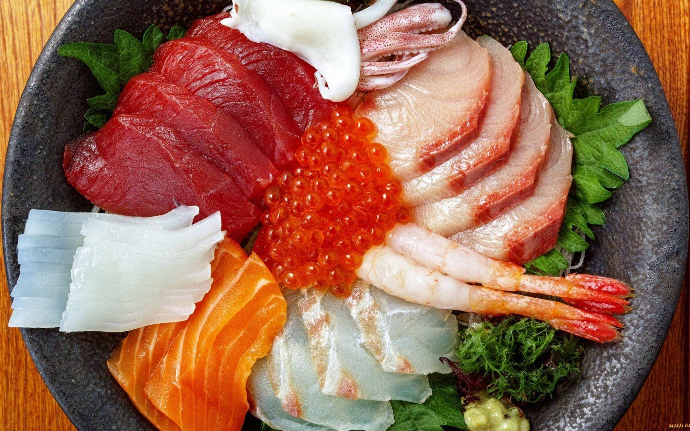

Page Title
Unordered list
Favorite Sports
- Cricket
- Football
- Badminton
Ordered List
Favorite Movies
- Shasank Redeemtion
- 3 idiot
- Fightclub
Nested Lists
Actors in the movies
- Shasank Redeemtion
- Tim Robbins
- Tronser
- Three idiots
- Amir Khan
- R Madheven
Definition Lists
- Computer
- A computer is an electronic device that manipulates information, or data. It has the ability to store, retrieve,
and process data. You may already know that you can use a computer to type documents, send email, play games,
and browse the Web.
- Sashimi
- Sashimi is a Japanese dish of thinly-sliced raw food, usually fish and seafood, but also sometimes other meats.
Find More about Sashimi
